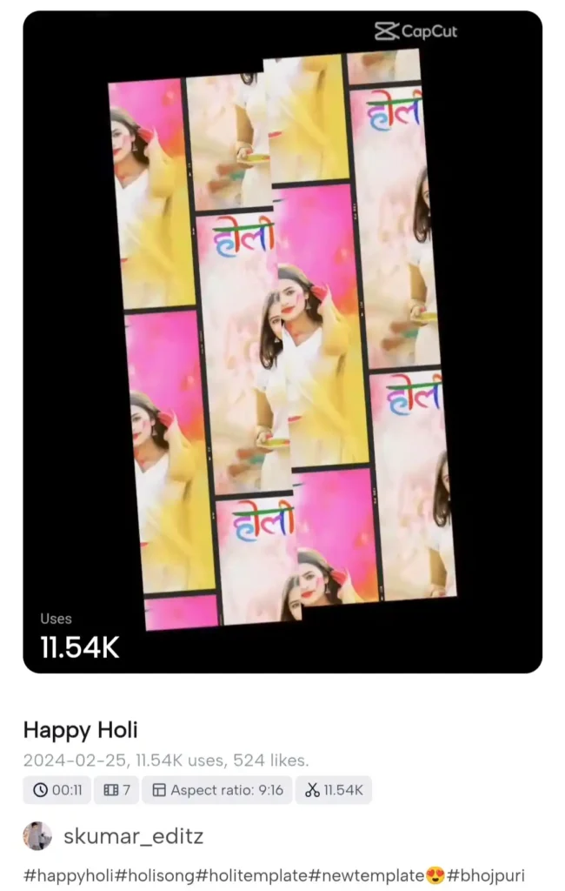

Holi is the festival of colors, joy, and celebration, and what better way to capture these beautiful moments than by creating vibrant Holi videos?
With capcut new trend holi templates you can transform your photos and video clips into stunning edits effortlessly. Whether you want to create a slow-motion splash effect, vibrant transitions, or sync Holi beats with your clips, CapCut templates make it super easy.
In this article, we will provide you with the best Happy Holi CapCut Templates that you can use to edit your Holi videos like a pro. These templates are trending on Instagram and TikTok, ensuring that your video stands out among the rest!
What is a Happy Holi CapCut Template?
CapCut is a free and powerful video editing app that provides ready-to-use templates, allowing users to create professional-looking edits without needing advanced editing skills. The Happy Holi CapCut Templates come pre-designed with festive effects, colorful transitions, and synced Holi music, making your video editing process seamless.
Why Use Happy Holi CapCut Templates?
✅ Easy to Use – No advanced editing skills required. Just upload your clips, and the template does the magic. ✅ Trending Effects – Get the latest Holi-themed effects, including color splash, transitions, and music sync. ✅ Perfect for Social Media – Ideal for Instagram Reels, TikTok, YouTube Shorts, and WhatsApp Status. ✅ High-Quality Editing – Create professional-grade videos effortlessly.
Best Happy Holi CapCut Templates (2025 Trend)
Here are some of the best Happy Holi CapCut Templates you can use for your Holi celebrations:
🌈 1. Color Splash Holi Template

Effect: Slow-motion color bursts with upbeat Holi music.
🎭 2. Holi Photo Slideshow Template
Effect: Create a slideshow with colorful transitions and festive background music.
Squid Game CapCut Template – [Use Now]
🎶 3. Holi Beat Sync Template
Effect: Auto-sync your video clips with trending Holi songs.
🎇 4. Holi Celebration Cinematic Template
Effect: Cinematic Holi edit with slow-motion and high-definition effects.
🎥 5. Happy Holi CapCut Trend Template
Effect: Capture the Holi vibe with fast transitions and vibrant filters.
🛠️ How to Use the Happy Holi CapCut Template?
Follow these simple steps to edit your Holi video using CapCut templates:
1️⃣ Click on the Template Link – Select your favorite Holi template from the list above. 2️⃣ Open in CapCut – The link will redirect you to the CapCut app. 3️⃣ Import Your Photos/Videos – Choose your Holi clips or images. 4️⃣ Customize the Template – Adjust effects, text, and music if needed. 5️⃣ Export and Share – Download your video in high quality and share it on Instagram, TikTok, or WhatsApp.
🎊 Why Choose Our Holi CapCut Templates?
Unlike other random templates, we provide handpicked, high-quality templates that are specially curated for Holi celebrations. Our templates are: ✔️ Optimized for Trends – Stay ahead with trending Holi edits. ✔️ Compatible with CapCut – 100% working templates. ✔️ High-Resolution Output – Get crystal-clear video quality. ✔️ Free to Use – No hidden charges or premium fees.
📢 Final Words
If you want to make your Holi videos go viral, using these Happy Holi CapCut Templates is the best way to do it! Whether it’s for Instagram Reels, TikTok, or YouTube Shorts, these pre-made templates will give your videos a festive and professional touch in just a few taps.
📌 Don’t forget to share your Holi edits using these templates! Let us know which one you liked the most in the comments below. Also, keep checking back as we update this list with new Holi CapCut trends!
🎥 Get ready to create the most stunning Holi videos ever!
Happy Holi! 🎨🎉